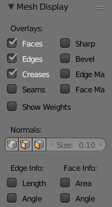

Mesh Display¶
Reference
Mode: Edit Mode
Panel:

Mesh Display Panel.
This panel is available only in edit mode, when the object being edited is a mesh.
Overlays¶
The Overlays section provides controls for highlighting parts of the mesh.
- Edges
- Toggles the option to see the selected edges highlighted. If enabled the edges that have both vertices selected will be highlighted. This only affects in vertex selection mode and when UV Unwrapping.
- Faces
- Defines if the selected faces will be highlighted in the 3D View. This affects all selection modes.
- Creases and Bevel Weight
- Highlights edges marked with a crease weight for the Subdivision Surface Modifier and/or a bevel weight for the Bevel Modifier, respectively. In both cases, the higher the weight, the brighter the highlight.
- Seams and Sharp
- Highlights edges marked as a UV seam for unwrapping and/or sharp edges for the Edge Split Modifier
- Edge Marks and Face Marks
- Used by Freestyle.
- Show Weight
- Displays the vertex weights as a texture.
Normals¶
- Show
Displays the normals of faces and/or vertices using the Face and Vertex checkboxes.
Vertex, Loop, Face
- Size
- You can also change the length of the axis that points the direction of the normal.